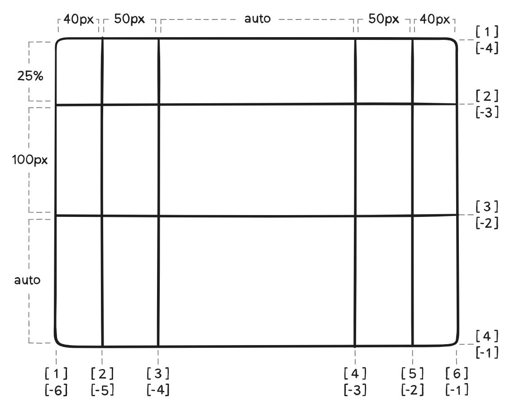
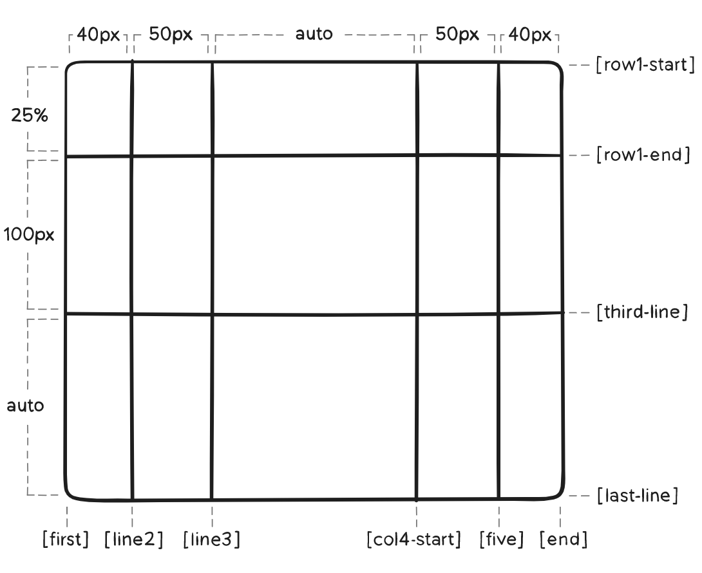
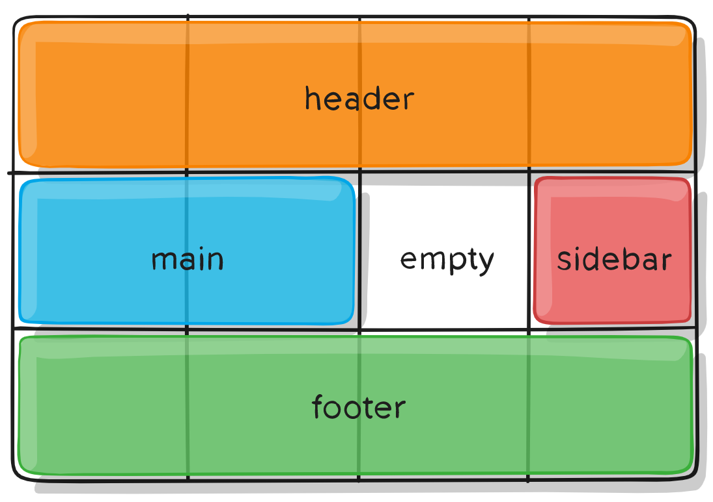

grid布局
概述
grid布局是面前最强大的CSS布局方案。
它将网页划分成一个个网格，可以任意组合不同的网格，做出各式各样的布局。

以前完成上图要用很多复杂的CSS，现在Grid布局很快就能实现。
Flex布局是轴线布局，只能指定项目针对轴线的位置，可以看作是一维布局 ,Grid布局则是将容器划分成行和列，产生单元格，然后指定项目在哪个单元格，可以看做二维布局 。
可以在caniuse上查看，各个浏览器对grid布局的支持情况。
基本概念
采用网格布局的区域称为容器container。容器内采用网格定位的子元素称为项目item
容器属性
display:grid指定一个容器采用网格布局。
1 | .contarner{ |
上图是display:grid的效果，默认情况下，容器元素都是块级元素，但是也可以设置成行内元素。
1 | .container{ |
上图是display:inline-grid的效果
grid-template-columns属性/grid-template-rows属性
使用空格分隔的值列表，用来定义网格的行和列，这些值表示网格轨道的大小。他们之间的空格表示网格线。
值:<track size>:可以是长度值，百分比，或者等份网格容器中可用空间（使用fr单位）<track name>:可以给网格线取名字。
CSS代码:1
2
3
4
5.container{
display:grid;
grid-template-columns:40px 50px auto 50px 40px;
grid-template-rows:25% 100px auto;
}以上代码可以创建如下图的网格容器。
还可以给指定的网格线取名称，注意网格线名称的括号语法 CSS代码:1
2
3
4.container {
grid-template-columns: [first] 40px [line2] 50px [line3] auto [col4-start] 50px [five] 40px [end];
grid-template-rows: [row1-start] 25% [row1-end] 100px [third-line] auto [last-line];
}repeat()关键字
有时候重复写值非常麻烦，可以使用repeat()简化重复的数值
CSS代码：1
2
3
4.container{
grid-complate-columns:repeat(3,100px);
grid-complate-rows:repeat(3.100px);
}以上代码等价于
1
2grid-complate-columns:100px 100px 100px;
grid-complate-rows:100px 100px 100px;auto-fill关键字
有时候单位格的大小是固定的，但是容器的大小不确定，如果希望每一行或者每一列容纳尽可能多的单元格，这时候就可以使用auto-fill
CSS代码：1
2
3
4.container{
display:grid;
grid-template-columns:repeat(auto-fill 100px)
}上面代码表示每列宽度为100px，然后自动填充，知道容器不能放置更多的列。
fr关键字
为了方便表示比例关系，网格布局提供了fr关键字（fraction的缩写，意思片段）。如果两列的宽度分别为1fr和2fr,就表示后者是前者的两倍。
CSS代码：1
2
3
4.container{
display:grid;
grid-template-columns:1fr 1fr;
}fr可以与绝对长度的单位结合使用1
2display:grid;
grid-complate-cloumns:20px 1fr 1fr以上代码表示，有三列，第一列为20px，剩下的空间由剩下的两列平均分配。
grid-row-gap属性/grid-column-gap属性/grid-gap属性
grid-row-gap属性设置行与行的间隔。grid-column-gap属性设置列与列的间隔。grid-gap以上两者的缩写。grid-template-areas属性
网格布局允许区域（areas），一个区域由单个或多个单元格组成。grid-template-areas属性用于定义区域。
值:grid-complate-areas由网格项的grid-area指定的网格区域名称.:代表一个空的网格单元none: 不定义该网格区域
CSS代码1
2
3
4
5
6
7
8
9.container{
display:grid;
grid-template-columns:100px 100px 100px;
gird-template-rows:100px 100px 100px;
grid-template-areas:
"a b c"
"d e f"
"g h i";
}上面代码先划分出9个单元格，然后将其定名为a到i的九个区域，分别对应九个单元格。
下面是一个实例1
2
3
4
5
6
7
8
9.container{
display:grid;
grid-template-columns:50px 50px 50px 50px;
gird-template-rows:auto;
grid-template-areas:
"header header header header"
"main main . sidebar"
"footer footer footer footer";
}注意:你的声明中的每一行都需要有相同数量的单元格。grid-template属性
用来定义grid-template-rowsgrid-template-columnsgrid-template-areas的缩写。
以上代码可以简写为1
2
3
4
5
6
7
8.container{
display:grid;
gird-complate:
"header header header header" auto
"main main . siderbar" auto
"footer footer foooter footer" auto
/50px 50px 50px 50px
}
子元素属性
grid-column属性是grid-column-start和grid-column-end的合并简写形式，grid-row属性是grid-row-start属性和grid-row-end的合并简写形式。
下面是一个例子
1 | .item-1{ |
上面代码中，项目item-1占据第一行，从第一个跟列线到第三根列线。
这两个属性中，也可以使用span关键字，表示跨越多少个网格。
1 | .item-1{ |
grid-area属性
grid-area属性指定项目放在哪一个区域1
2
3
4
5
6
7
8
9
10
11
12.container{
display:grid;
grid-template-columns:50px 50px 50px 50px;
gird-template-rows:auto;
grid-template-areas:
"header header header header"
"main main . sidebar"
"footer footer footer footer";
}
.item-1{
grid-area:header;
}上面代码表示把item-1放在header区域。
grid-area属性还可以当做grid-row-start、grid-column-start、grid-row-end、grid-column-end的合并简写形式。1
2
3.item-1{
grid-area:<row-start> | <column-start> | <row-end> | <column-end>;
}justify-content属性/align-content属性
justify-content属性定义整个内容区域在容器container里面的水平位置。align-content属性定义整个内容区域在容器container里面的垂直位置。1
2
3
4.container {
justify-content: start | end | center | stretch | space-around | space-between | space-evenly;
align-content: start | end | center | stretch | space-around | space-between | space-evenly;
}跟flex类似，只是多了个
space-evenly，它是将空间平均分配到每个间隔里面。justify-items属性/align-items属性
justifu-items属性控制容器内所有网格项水平对齐位置。align-items属性控制容器内所有网格项垂直对齐位置。1
2
3
4.container{
justify-items:start|end|center|stretch;
align-items:start|end|center|stretch;
}justify-self属性/align-self属性
justify-self属性可以单独控制容器内单个网格项的内容的水平对齐方向1
2
3
4.item-1{
justify-self:start|end|center|stretch;
align-self:start|end|center|stretch;
}
（完）
资料参考：
- 阮一峰《CSS Grid 网格布局教程》
- 《CSS Grid 布局完全指南(图解 Grid 详细教程